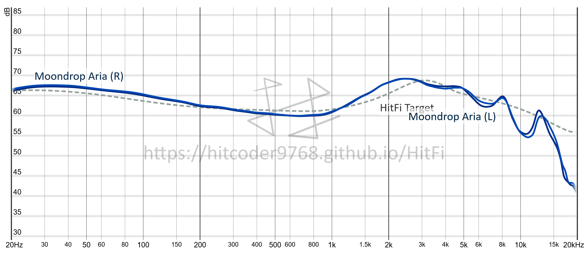

Moondrop Aria
Intro
The Moondrop Aria is somewhat new to Moondrop's line of high-performance budget single-DD IEMs. Allegedly it's a lot like it's bigger brothers, the Moondrop Starfield and the Moondrop KXXS, except with a lower price tag, worse imaging, and a supposedly better soundstage. However, measuring and judging such characteristics are not my forte, so I'll go into it as best I can where it's relevant, but I'll stick to what I do know.
I'd also like to note that the Aria is often regarded as inferior at the price point to the ER2SE / ER2XR, so do keep that in mind.
Design
The Aria comes with a very nice braided cable with a nylon-braided surface. I really do like the feel and appearance, and it indeed makes them feel very elegant and premium. Additionally the cable uses a 2-pin connector and is replaceable, which is largely appreciated, notably because I do generally prefer the 2-pin connector to MMCX connectors as they take much longer to wear out and do not twist. Lastly, the cable terminates with an L-shaped 3.5mm jack, which is additionally appreciated as I find this to be more practical for portable use.
The shells for the Aria are very weighty and have a metal finish, making them feel sturdy and robust. Though, with that being said I don't find the weight to be the most comfortable ever, and in addition the nozzles are a little on the large size, which makes getting a good seal slightly annoying for me (weirdly I only really have issues in my left ear).
They also look really nice too, with a similar pattern on the shell to that of the pattern on the box.
In the box along with the Arias were also a bunch of ear tips- I'd argue that there were a little too many, which while many people would appreciate, I found it hard to tell the difference between the sizes. I settled on the medium-ish sized tips but I digress.
Lastly, the box for the Moondrop Aria also included a carry case, which is extremely appreciated as I always like to keep my IEMs in cases to keep them safe and transport them without getting damaged and with reduced chances of tangling.
Overall, the cable is great, the build is sturdy and premium, and the case included is very very nice, though I did find the shells to be a little heavy for my liking, and the sheer quantity of tips overwhelmed me a little bit. Thus, I'd have to give the Aria a 7/10 for its design.
Tuning
As usual I will drop the graph here to get you acquainted with the objective side of the tuning before I begin.

The Moondrop Aria hits my bass preference pretty well, with a boost at 30Hz of about 7db from the lower mids around 600Hz. The midbass between 100Hz and 300Hz is a little boosted for my preference, making the bass a little "smeary" as described by a few people in the Dankpods Discord server. With that being said, the quality of the bass is perfectly fine, especially for the price point, and I find it to be quite pleasant sounding. It may be "smeary" but it is not bloated, and doesn't muddy up any of the other frequencies.
The lower mids are fine; slightly recessed, but not noticeably so. The result feels more "bass-boosted neutral" than "V-Shaped".
The upper mids are extremely smooth,and again, hit my target curve pretty well. The Aria is a little louder at around 2kHz than my target, but this doesn't seem to present an issue, and is overall very pleasant to my ears. There is no harshness or sibilance on vocals, and the tonality is extremely pleasant.
The treble is also very pleasant and easy on the ears; there is no noticeable pierce, and there's a reasonable amount of airiness, though it doesn't extend as far as I would like.
In conclusion, the tuning is very pleasant. It hits my preference target pretty well with a few minor nitpicks. Though because of the smeary bass, and the mids being just a smidge more recessed than I'd like (and when I say a smidge, I really do mean a very small amount), the 2kHz band not quite being where I want it to be, and the treble not extending as far as I would like, I'm going to have to give the Aria a solid 8/10 for its tuning.
Value
The Aria, at ~$70USD is a little more expensive than everything else I have tried thus far, as far as IEMs go at least, but it is definitely deserving of its price tag. With a slight upper-hand against the ER2 on its soundstage, it does allow it to compete as an "alternative with a different flavour" for the price bracket, but overall many would argue that the ER2 is a winner for this price bracket. That being said I do genuinely think the Aria is worth the price.
So with all said and done, I'll give the Aria a 7/10 for its value.
Extra
Tech-wise, I do notice a bigger soundstage than most of the other IEMs I have tried; I was pleasantly surprised at this from an IEM, but I'm also sure there's better out there, even if this is the best of its kind for the price point.
Summary
Well worth it's price, very pleasant tuning with a good balance of tonality and warmth, and providing an impressive soundstage exceeding expectations, held back by it's "smeary bass".
Score: 73